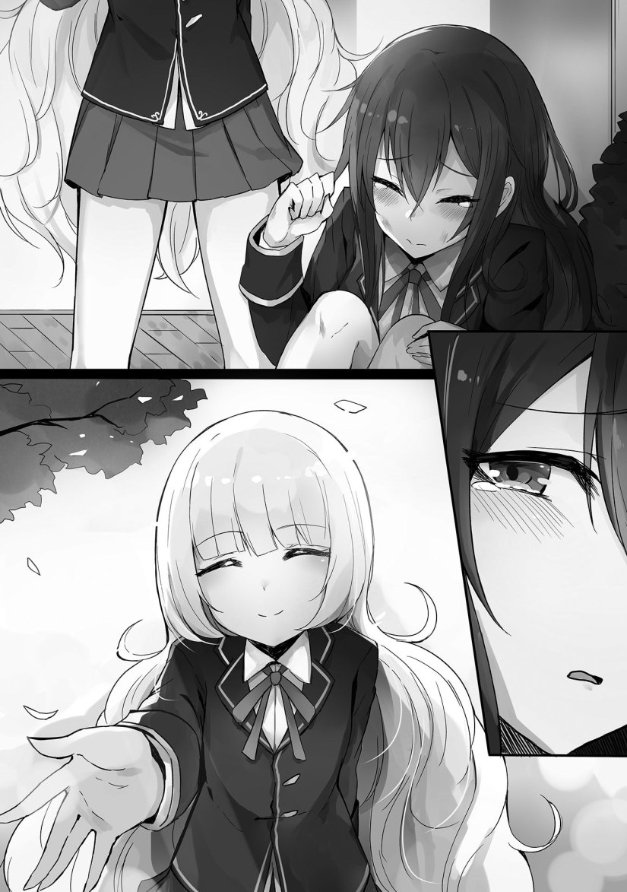

TLN: It has come to my attention that I don’t provide enough weeb juice to serve as daily sustenance for some of you. As a result, I’m going to try increasing my -desu levels and see if that will sate your earthly Nippon desires.
To translate that into English, I’m going to keep in honorifics and also some other nuanced Japanese-specific terms to see if you guys prefer that. I personally don’t, but if the majority of you do, I will adjust future releases of this novel accordingly. Desu has been disengaged.
Prologue
What is love?
I, “Leon Fou Baltfault”, am an honest, slightly reserved youth who’s been thinking about such philosophical matters.
I also happen to be an ordinary schoolboy who had reincarnated into “that” otome game, the one I had been forced to play against my will during my previous life.
I’m a virtuous guy who loves peace, but in this otome game world, I’m just a mob who doesn’t stand out that much.
At least, that’s what it was supposed to be!
For some reason, I’ve been promoted to a viscount.
Being of the lower fourth rank within the royal court, I’m in quite the grandiose situation.
While still being a student, a very opportune position as a lower fourth ranked viscount awaits me.
Due to that──I’ve been worried about matters relating to love.
Sometimes, there’s the cliche where love will solve everything in a story, and there’s no doubt that the otome game follows that pattern.
Love determines everything.
Even Luxon, the supposedly undefeatable endgame boss, would have been defeated by the love between the protagonist and the male capture targets, resulting in a happy ending.
All matters are resolved by love.
Love is a big deal in this world.
A force more potent than any weapon.
An influence more potent than any diplomatic endeavor.
Domestic affairs will resolve themselves as long as love is there to help.
Love is a big deal. Love is supreme! Love will save the world!
──In this world, love is the ultimate weapon.
On that topic,
“Why did things come to this?”
[It’s all your own doing, Master.]
I’m not in the wrong at all, and yet my accomplice “Luxon” was being cold.
It took the form of a metallic sphere with one red eye.
It’s main body is a spaceship equipped with an AI.
The softball-sized sphere is an extension of it──a mere computer terminal.
By all rights, it’s supposed to be more respectful to me, its master.
However, this thing is way too harsh towards me.
Still, it’s quite capable, so I keep it nearby since it’s a frightening thing that will do who knows what while spouting “Exterminate the new humans!” if I take my eyes off it.
Good grief, nothing but incompetents all around me.
Now then, stopping my escapism, I glanced at a pile of letters piling up on my desk.
The amount of letters sent to my dorm had reached the point where they made a mountain.
“It’s quite the new experience to have this much of a turnabout happen.”
The senders of those letters were girls from the academy’s advanced class.
Though the contents of the letters were pretty condescending, there were some braver ones who wrote something like “make preparations for a tea ceremony three days from now.”
The girls who ignored my invitations for tea ceremonies up until now had made a complete 180 the moment I got promoted and wrote letters to take the initiative.
“──This is too much.”
This situation is pretty discomforting.
It’s a little amusing to think that the girls who took no notice of me up until now were suddenly trying to get closer to me.
However, the fact of the matter is that this is not ideal.
──Pull back. It’s normal to pull back here. This is discomforting.
[Your promotion was made final prior to winter break.]
During the school trip in the second semester, troops from the Fanoss Principality had attacked.
I managed to drive them away somehow, but the actions I took during that time ended up with me being promoted.
Due to that, the girls made a frightening turnabout when I came back to the academy.
It’s especially frightening now that I’m going from the second semester into the third semester.
“They’re not attracted to my own self, but to my status and property. How low of them.”
[This is a matter of marriages between nobles, so there’s not much meaning to ones own self in the first place. In fact, take a look at this letter.]
一A single letter floated up.
I took it to look over its contents.
It seems that Luxon’s able to check the contents of a letter without opening the envelope.
What a convenient thing.
“Is there something interesting written here? Whoa.”
When I looked at the contents of the letter, they were yet again terrible.
Written inside were someone’s conditions for marriage, including the construction of a residence in the royal capital that can hold about ten people and to also look after her troublesome lovers.
Are the girls who present such harsh conditions sane?
Then again, I’m dealing with the academy’s girls.
Women domineer over men──this is the reality of “that otome game”.
When the game world became a reality, things were so harsh that I felt the strange urge to laugh.
[All the girls are quite awful. Just whose child are they are planning to give birth to?]
“If I were to get married, I would want to produce a heir and then just live a free life. It’s not like I’m asking for something unusual. I mean, my father’s legal wife is doing the same.”
Are these kinds of things even allowed?
──Unfortunately, this world indeed allows such things.
This really is a cruel world.
[It’s odd that marriages are this bizarre. Considering that males are few in number, it wouldn’t be strange if marriage was male-dominated. I’ve noticed that it’s particularly bad for those of the baron and viscount ranks.]
The ranks above and below those don’t have it as bad.
In fact, most marriages for earl families and above are under quite normal conditions.
I can’t say that they’re all like that though. There are some bad households too.
“This is an otome game, right? No matter how deeply I think about it, I won’t find an answer.”
Could it be that? Could it be the fact that the girls walk around with sub-race exclusive servants?
When trying to implement that setting into the world, could it have created this kind of inconsistent reality?
This is going nowhere. Thinking about it won’t bring up any answers.
That being the case, I’d rather not think about it.
After dumping the pile of letters into the trash, Luxon spoke to me.
[Oh? You’re not going to invite anyone to a tea ceremony? Considering who you are, I was thinking that you’d take the time to be naggy and make some snide remarks towards the girls who proposed a tea ceremony with you.]
“Just who do you think I am? Such a kind and ordinary person like me would never do such a thing.”
[By all means, I’d like to hear what your definition of an ordinary person is. I think that what the general public believes an ordinary person is and what you believe an ordinary person is are different.]
“You’re being noisy. Whatever, let’s finish this.”
Certainly, I thought about being naggy and making some snide remarks, but in the first place, it would be troublesome having to hold a tea ceremony for those girls who made a complete 180.
Despite how things look, I’m busy.
I have to make some tea for Livia──the protagonist of this otome game world, known officially as “Oliva.”
I also have to do the same with Anjie──the daughter of a duke, known officially as “Anjelica Rafua Redgrave.”
Furthermore, I’m also anticipating that I’ll have to make tea for the second year student Clarice and the third year student Deirdre. Those two helped me out with some things, so I wouldn’t be able to refuse if they asked me for some tea.
I also got some high-class tea leaves and a tea set, making it tough for me to refuse.
Huh? Now that I think about it, the only people I’m having tea with are girls.
──Well, whatever.
Leaving that aside, there’s one bigger problem.
I have suspicions that “Marie Fou Lafuan” is someone who reincarnated here, just like me──she’s the youngest daughter of a poor viscount family, but has been officially recognized as a saint.
Normally, if one knew about that otome game, they absolutely wouldn’t snatch away the title of the saint.
After all, in order to defeat the final boss──Livia’s own power is necessary.
It’s become evident that I have to take measures against Marie, who disregarded such risks and impersonated as the saint.
“Seriously, why did things turn out this way?”
[Isn’t this your own doing, Master?]
Is this thing planning to make all of this my responsibility?
◇
One girl sat on a bench with a gloomy aura.
Her navy blue, long hair was fairly disheveled.
There were noticeable stains and tears on her uniform.
Her name was “Cara Fou Wein.”
Her household was that of a semi-baron’s, being classified as a knight household under the Holfault Kingdom.
She was formerly under the guardianship of the Olfery earl household, but the Olfery household had been destroyed.
The head of the family and the heir were executed for joining forces with sky pirates.
The other family members were deprived of their status and assets.
The Olfery household’s daughter, who Cara had followed, disappeared from the academy.
The households who were closely under their guardianship had also disappeared. Practically all people related to the Olfery earl household had disappeared from the academy.
Even so, Cara remained in the school.
Perhaps it could be said that she was left behind.
Though the fact of the matter was that her household had no relation to the sky pirates, there were other factors contributing to her situation.
A group of girls happened to pass by Cara, who hung her head.
“Look, it’s the traitor.”
“What a disgrace to the nobles. She should just hurry up and vanish.”
“She was involved with sky pirates, so why is she still in this academy?”
──Her situation served as a sort of warning.
Given no option to quit school, Cara had to accept her current position.
“I──I…”
From Cara’s point of view, a follower like herself had no right of veto.
She knew very well about the Olfery household’s conduct, and also knew that they would dispose of anyone who made the mistake of opposing them.
However, now that the Olfery family been torn apart, she was being treated as a traitor.
“What was I supposed to do? What could I have done?”
She couldn’t defy the Olfery household’s daughter.
It was obvious that she would have suffered a bitter fate if she did.
If she betrayed them, it was highly likely that she would be crushed and have further revenge await her.
Under such circumstances, what could she have done?
(Even I had to put up with that woman. And yet…)
While weeping and thinking of such things, a small girl approached the group.
She was someone acknowledged by the temple as a saint──Marie.
(She sure has a lot of followers.)
Marie never had a single follower up until recently, but after becoming a saint, people gathered around her.
As a saint and as the former crown prince’s lover, Marie was someone to be sought after.
It was inevitable that noble children would draw closer to her.
The girls who had badmouthed Marie before were now praising her.
“Marie, you’re as lovely as ever today.”
“As usual, your clothing today is superb. You have such good taste.”
“Marie, a new cafe opened up. Would you like to visit it together?”
The girls in the academy made a complete 180.
Furthermore, exclusive servants and boys accompanied those girls, resulting in there being many people around Marie.
Under such a situation, Marie──
“Sheesh, didn’t I say that you could address me casually?”
──was having a lot of fun.
“But, doing such a thing would be too much.”
While the girls were bewildered, Marie made a smile.
“I prohibit addressing me so politely. I mean, aren’t we already close friends?”
“Marie, such benevolence you possess!”
“Jeez, I said to stop that~.”
Cara looked at Marie, who was asking the girls to stop while enjoying her time, and cast her eyes downward.
(They’re going to bully me again if they don’t go away soon.)
Cara, who had put Marie’s lovers Brad and Greg into a trap, had stayed away from Marie for fear of retaliation from her.
A girl, seeing Cara, made a loud voice.
“Oh my, it’s the one whose been a disgrace to us nobles.”
Cara, whose shoulders quivered, quickly attempted to flee, but was blocked by the boys.
“You’re still in this academy?”
“How can someone like you call yourself a noble?”
“How truly annoying.”
Normally, the boys would be reserved in front of the girls, but were allowed to do as they pleased with Cara and began taking the offensive.
People gradually gathered and surrounded Cara.
The people around laughed at her as she became frightened and curled herself into a ball.
As she quivered and shook, Marie then approached.
When Marie’s hand approached Cara, the latter closed her eyes and braced herself for an impact.
However, no matter how long she waited, she didn’t feel a slap, nor did anything happen to her.
As she nervously opened her eyes, she saw Marie smiling while reaching a hand out to her.
“Huh? U, um?”
“You must be Cara. A lot had happened, but let’s be friends.”
The surrounding people were surprised at what Marie said and advised her against it.
“Marie, this is the girl who led Brad and Greg into a trap. Besides, she’s a traitor connected to sky pirates.”
Marie shook her head towards that.
“There must be some reason for why she’s here. It seems that she already apologized as well, so it’s fine. Besides, it’s not good for everyone to gang up on someone and bully them.”
The people around her went silent.
After speaking, Marie took Cara’s hand.

The small Marie grasped Cara’s hand while making an expression of respect.
“So, Cara. You and I should be friends.”
Cara was delighted. She shed tears while nodding towards Marie, who seemed to be sparkling.
“R, right.”
◇
desu
https://images.app.goo.gl/rsj5somQZxYc8zLr5
Desu
Desuwa
Nano ja~
Desuyone
desuyo
Desuwa~
:3
Degozaru.
Nai Wa~~
Nanoda
Degozaru…dez..
Okaeri nano ja~
nanoja
*looks at Marie* FAKE!!!!!
Are you wait until Ramadhan end?
It ended already
Definitely want juice desu
Thanks
Thanks for the chap!!!!
Is it the 2- 3 days chapter release or random releases?
It’s pretty much a 2-3 day release but… I wouldn’t count on it since it’s really just random. (at least as far as I remember, since it’s been like a month since the last update and I have a short memory given that I had to expunge everything unrelated to school due to finals and AP exams)
Thanks for reply!!!
Thanks
Ah, I had forgotten this feeling~ Leon getting all excited to make tea while ignoring reality, and that witch manipulating everyone around her at her own convenience. This novel makes me feel something unique.
Thanks for the chapter!
Well at least she isn’t Celes.
I prefer no honorifics. It looks more professional. Looking at the other comments I realize I’m part of the minority.
Lol. It seems I have a fellow lover of this novel. However, I have to admit that Cara really is adorable despite being a villaness, and I really do wonder what happened to the Olfery Household and their subordinates.
It is kind of unfair to let those rotten females go, but I can admit that my masculine pride would hesitate to kill women and children………That would mean that I disagree with killing the heir unless he was proven rotten. On the other hand, if they really had to turn into normal commoners, I can imagine how all those traitors will have a hard time getting used to the common sense of most of the world, especially the females.
……The females will have a horrible chance of getting married too…….Crap, now, I can’t help but imagine how annoyed the male slaves are. Lol
Thanks for the update
Thanks desu
I think I prefer it in normal English ngl
Definitely, it just feels better
Thank you!
Why does it feel so short
Thanks for the chapters
You delivering more weeb juice means a chapter per day right? Riiiiiiiiiiight?
How else are we supposed to fuel our addictions, Broke Mercenary dropped down to like 1 chapter a week.
I’m still miffed that Leon handed over the necklace, it was legally his and he’s used to lying his head off; just pretend you didn’t know it’s worth and sold it to the Duke household for amnesty or something.
Case in point, Leon’s problems are his fault alone.
To be fair, Leon has no idea that that bish would take the saint role for herself.
Yeah, but his assumptions are based around his belief that if she was reincarnated, she must be a walking talking wiki of otome game lore, like him, and thus, doesn’t think anyone would be dumb enough to TRY and steal the role that Olivia HAS to play. He never even really considers the possibility that the person might barely know anything about the game, or never completed it. And that’s a big oversight on his part. Understandable, maybe, but it still makes this his fault.
Thank you finally it’s v3 ♡
Vol.3 kitaaaaa~
Thx for the Chapter~!!
(´｡• ω •｡`)
Thanks for the chapter Desu~
using a japanese one or the english pronouns not gonna change that much as long as the context of the pronouns is right. if you much more familiar with the english. use the english because people will complain anyway if you use the wrong pronouns
Welcome back and thanks for this part of the prologue.
Yup. Cara is one of the most decent character, like literally an ordinary person with ordinary personality
it stink!!!!!
that phony saint is stink!!!!
that marie really are inferior version of celes (not OP, and no charm effect only acting all her life)
thank for the chapter, we near MOAR!!!!!!
Idk. Celes was actively malicious, Marie just seems normally selfish and short sighted.
The only one she’s really bullied is her brother, and I suspect she actually cared about him and considered it teasing. Well, she also denied the protagonist her salvation, but she at least had reasons for that, selfish though they were.
I don’t believe she’s fully acting in this chapter, but does actually have a certain instinct to reach out to people in distress. I don’t think she’s hit her lowest point yet, but I predict a redemption arc for her by the end.
Coming back after the recent chapter!!!!
See, she just doing it to pester leon. Not because reaching out to cara
Well i agree that she is selfish and shortsighted
We don’t know if she only bullied her brother though and it’s the truth that she really hate him after his death to the point she blame him for her failed marriage life.
Marie’s shortsightedness was partly caused By Leon in her previous life, because she didn’t know how difficult the war she can assumed that whoever become the saint it will always go well and she also didn’t know That the event already deranged from the original series
In short, Leon is the one who knows about battle event, while Marie is the one who knows about the capturing event
Certainly it’s clear I overestimated her, although I still think a reconciliation end is more likely.
I like normal english better. It feels less crin- I mean it feels more professional. -desu
by Honeybee-sama
Well let’s see how this relationship will last when Marie’s status will inevitably self-destruct too.